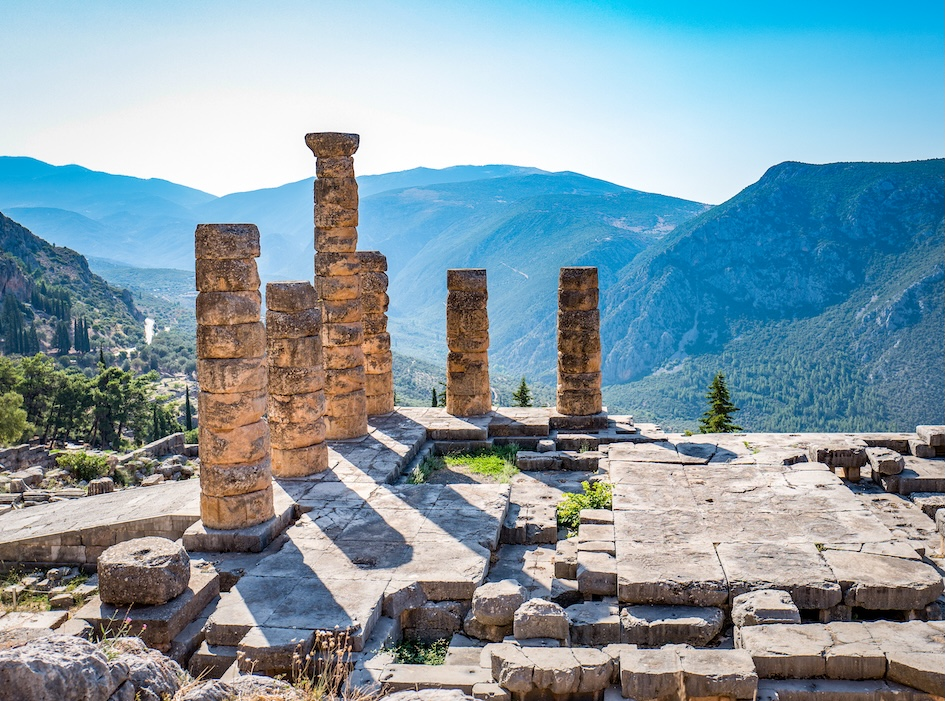

Jag dricker, alltså finns jag: En filosofs vägledning till vin (Bokrecension)
En recension av Roger Scrutons bok om vin, filosofi och civilisationens välgrundade glädje.
Jag måste erkänna att det är några år sedan jag läste Roger Scrutons bok om vin. Med det sagt bär boken fortfarande spåren av mina många understrykningar och marginalanteckningar, säkra tecken på att den, åtminstone då, satte min annars ganska trögtänkta hjärna i en orgie av begrundan.
Det finns mycket att tycka om även hos författaren. Roger Scruton var under sin livstid utan tvekan Englands främste filosofiske tänkare och, skulle man kunna hävda, en av de ledande tänkarna i hela västvärlden. Det hjälper att hans stil är flytande, tydlig, till och med gentlemannamässig. Lärd och akademisk utan att någonsin bli pretentiös. Han är en av få tänkare jag har läst som hade modet att förmedla komplexa idéer på klar och begriplig prosa. Hans centrala tankar om hem, gemenskap, tillhörighet, rättsstat, plikt, bevarande och, framför allt, skönhet är lika giltiga i dag som när han började skriva om dem på 1970-talet. Det som gör denna bok så intressant är just att den är mer än en bok om vin: dess utvikningar om religion, historia, identitet och den moderna världens problem är det som gör den till en så givande läsning. Det är som en av de där sällsynta bilresorna där de slumpmässiga avstickarna visar sig vara lika givande som själva rutten.
För Scruton är vin, åtminstone när det tas på allvar och inte dricks till övermått, en källa till mycket av det som varje förnuftig och rättskaffens människa borde värna om. Han inleder sitt resonemang i antikens Grekland och dess filosofiska symposier, institutioner som senare skulle bli grunden för det vi i dag skulle kalla västerländsk bildning. Här "upptäckte grekerna den sed som lockar fram det bästa i vinet och det bästa i dem som dricker det: den sed genom vilken självsäkerhet infinner sig även hos de försagda." Med andra ord, säger Scruton, "ger vinet en röst åt dem som annars kanske skulle sakna modet att tala. Det frambringar ett slags 'självsäkerhet', eller Selbstbestimmung, som de tyska romantiska filosoferna kallade det." Denna förmåga hos vinet att smörja hjulen i det civiliserade samtalet utgör bokens centrala tema. Scruton drar resonemanget till sin logiska slutsats:
"Man skulle kunna säga att vin förmodligen är lika gammalt som civilisationen; jag föredrar att säga att det är civilisationen, och att skillnaden mellan civiliserade och ociviliserade länder är skillnaden mellan de platser där det dricks och de platser där det inte dricks."
Men här måste en viktig distinktion göras. För Scruton fungerar detta endast när vin dricks med måtta, och han har inte mycket till övers för supandets kultur:
"De dricker för att fylla det moraliska tomrum som deras kultur har skapat, och medan vi känner till dryckens negativa effekt på tom mage, bevittnar vi nu den långt värre effekten av dryck på ett tomt sinne."
Det är dock inte bara de som dricker för mycket som bekymrar Scruton, utan även de som dricker för lite. När det gäller skenhelig avhållsamhet håller Scruton med H. L. Mencken, som definierade puritanism som "den gnagande rädslan för att någon, någonstans, kanske är lycklig". Men sedan finns det de som inte kan dricka, och här är Scrutons medkänsla som skarpast, som i hans beskrivning av vännen Yves:
"Jag hade sett Yves göra sig en smörgås eller en kopp kaffe. Men jag hade aldrig sett honom dricka ett glas vin. Jag berättade detta för Desmond, som upplyste mig om att Yves var en nykter alkoholist, som inte skulle röra den demoniska drycken i någon form. Följden var att hans melankoli hade blivit statisk, stelnad, en orörlig avlagring vid botten av hans sinne, med alla idéer och all längtan fångade under den."

Poängen är alltså inte njutningslystnad utan måttfullhet. När han återvänder till Grekland berättar han om "de två korta maximerna inskrivna ovanför porten till Apollons tempel i Delfi: 'Känn dig själv' och 'Inget till övermått'. Maximerna hör samman. För att känna dig själv måste du behärska dig själv, och för att behärska dig själv måste du hålla dig till medelvägen. Om du vill vara lycklig, hävdade Aristoteles, måste du odla dygden, och att vara dygdig är att undvika ytterligheter."
Vin ska alltså drickas till eller efter mat, som en föregångare till samtal och vänskap, och som en del av den civiliserade sällskaplighet där vi för en stund lyfts ur avund, aptit och självupptagenhet. Claret, till exempel, "ska inte hällas i sig utan begrundas, och alltid i gott sällskap – vilket naturligtvis inte utesluter att man dricker det ensam, om ens eget sällskap håller den standard som krävs".
Det måttfulla njutandet av vin är alltså en god vana värd att förvärva, något att arbeta på, eftersom så mycket gott kan komma ur det.
"De goda vanorna är svåra att förvärva, eftersom de innebär att vi måste övervinna våra naturliga böjelser, disciplinera våra begär och skapa det utrymme i våra motiv som, med tiden, kan fyllas av rationella val. De dåliga vanorna är lätta att förvärva, eftersom de springer ur aptiten och ur att låta omedelbar tillfredsställelse styra våra val. De goda vanorna är dygderna, de dåliga vanorna lasterna."
Sinnlig njutning ensam är alltså inte nog; det är bara din lägre aptit som talar. För att verkligen njuta av vin måste du röra dig bortom den sinnliga njutningen och in i den estetiska njutningen av vin, som i sin tur beror på din kunskap om kultur, sedvänjor och historia. Först då kan du njuta av vin i den upphöjda mening Scruton har i åtanke, som när han minns hur hans "hjärta och själ tändes vid den första klunken Château Trotanoy 1945; själva upplevelsen var berusande, och det var som om jag smakade berusningen som en egenskap hos vinet. Vi kan jämföra denna egenskap med den berusande kvaliteten hos ett landskap eller en rad poesi."
Jag håller dock inte med honom om att öl på något sätt skulle vara en underlägsen dryck. Men även här är Scruton kvick, när han antyder att Schopenhauers pessimism härrörde från hans förkärlek för öl framför vin, och när han berömmer Kant för att denne alltid ställde fram några stop vin på middagsbordet åt sina nattliga gäster. Wittgenstein tillrättavisas på liknande sätt för sin retliga asketism. Scruton återger anekdoten där Wittgenstein, när hans värd vänligt frågade vad han ville äta, svarade: “Jag bryr mig inte om vad jag äter, så länge det alltid är samma sak.”
Så om du vill främja kultur, samtal, vänskap, kamratskap, skönhet, ja, till och med civilisationen själv, var varken drinkare eller pryd. Vin är inte bara ett användbart hjälpmedel i allt detta; det har ett inneboende värde i sig självt. Detta eftersom "vin står avskilt från världen av förvärv och konsumtion, en moralisk resurs som vi frammanar ur det transcendenta med ett pop."
Det skålar jag för.
Du kan köpa Roger Scrutons I Drink Therefore I Am: A Philosopher's Guide to Wine här.